A big hit in theatres recently, John Wick Chapter 2 continues the story of John Wick’s artistic world of assassins, underground organizations, and deliciously action packed plot line. While most of you enjoy what looks to become a high grossing film trilogy for little more than its artistic and entertainment excellence, there is a deeper message that beautifully eludes the consciousness of most viewers as well as the leftist Hollywood establishment.
Like The Matrix, this film series seeks to subtly insinuate cultural memes into the population in a way that may organically take years or even decades to fully foment. In the case of The Matrix, society was gifted with the notion of the “blue” and “red” pills and all the corresponding depths of meaning behind these terms. This one film trilogy that started in the late 90’s is now seen as the catalyst for society’s recent awakening to the Orwellian control system that surrounds us.
However, while the Matrix trilogy is set to a somewhat depressing and insidious atmosphere that painfully awakens us to the decaying society around us, John Wick presents to us a wacky alternative world where almost all controls are let loose and humans are free to live by their own accord. In essence, one could argue that the Matrix trilogy identifies an ugly problem, while the John Wick trilogy presents one possible solution.
An in-depth analysis of the John Wick series can easily span an entire literary thesis numbering in the hundreds of pages, and no respectable ROK writer, myself included, would ever subject our valued readers to such anguish (or hedonism, depending on the reader). So without further adieu, here is a brief and condensed analysis of the ways in which the John Wick film series unabashedly conveys notions of K-selection and masculinity.
The K-selective protagonist
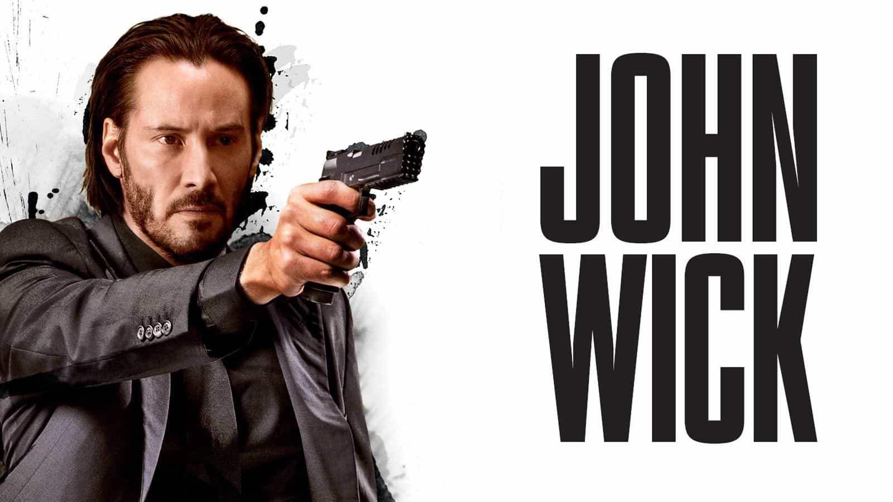
John Wick, played by Keanu Reeves, is not presented to us as some pretty boy ‘roided up Jersey Shore caricature that serves the sexual and emotional interests of women on all fours while the wind blows through his golden blonde hair. No, the directors present to us a man of good stature, fit, somewhat to the leaner side, and with a half Asiatic face of limited expressions, sporting full facial hair.
He is devilishly skilled in anything to do with violence and little else, and has a passion for classic muscle cars. John Wick is not a play boy, and the directors made sure to show that neither is he a man that attracts ample sexual attention from females – not because he is unattractive to them, but because every female character he chances upon in the films read loud and clear that he is not interested in catering to their whims or sexual needs, and that pursuing him would be a futile endeavor.
He is a man of “focus, commitment, and sheer will” who puts his goals ahead of everything else. He is not interested in spiking women’s emotions in order to con them into bed, and he is most certainly not interested in dancing around like an r-selective monkey to capture anyone’s attention.
Even the choice of Keanu Reeves as the actor, a man with a complicated personal life in the real world and a man gifted with an extra dose of genetic K-selection from his Asiatic roots, speaks volumes about the direction of this film series from the get go. The director screams at us quite succinctly: John Wick is not a sexy hero. He is the silver backed gorilla that will fuck you up if you get in his way.
There is no meaningful state
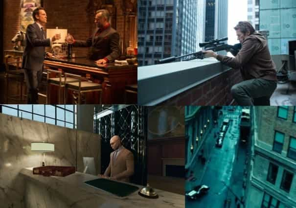
The world of John Wick is set in a parallel universe where it seems the only element missing is an overbearing, bureaucratic state. Assassins roam freely on the streets and perform contracts with impunity. The law is not enforced by any state authority, and codes of behavior are simply a gentlemen’s agreement, the violation of which at times result in retribution by the faulted.
In fact, the only police officer we see is Jimmy, the fearful and incompetent non-contributor who quivers at the very sight of Wick. My take is that the directors intended to portray a world that cleverly flips the victimhood mentality and fetid Slave Morality of our modern West on its head, and instead embraces individual choices and consequences, and an overarching Master Morality.
In the first movie it appears that the Russian Tarasov family essentially controls significant shares of the city’s economy with no consequences with the authorities, while Winston and The Continental harbor assassins openly. In the second movie we see that the Italian D’Antonio family holds significant power in society and operates, once again, with complete immunity from the law. Even the currency of exchange in both films is focused around the gold coins issued by The Continental, which is difficult to interpret in any way aside from a direct and blatant snub at our real world’s fiat currencies.
On a side note, it is interesting that the story line chose the Russians and the Italians – both white cultures known to be incredibly traditional and patriarchal – as a subtle insult to the weak and impotent image of the modern Anglo Western man. The city of New York is symbolic of the crown jewel of Western civilization, and its “corruption” by these powerful forces of masculinity, small government, and Master Morality is a clever and underhanded snipe at our modern Western Society.
Violence is the way of men
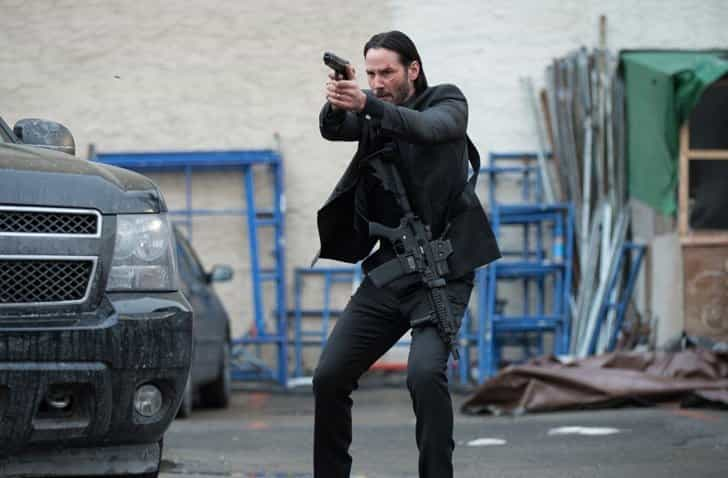
Without elaborating too much, I think this point is self-explanatory for anyone that has seen so much as even the promos for the movies. The film series is clearly of the action genre, and violence is deliciously scattered across the very fabric of its plotlines.
What is interesting to note is that violence is not portrayed horrifically, but rather artistically and, dare I say, beautifully. We almost get the feeling that the directors wish for us to nod our heads in agreement by the end of the movies and say, “yeah, violence seems like a nice and clean way of dealing with your problems”.
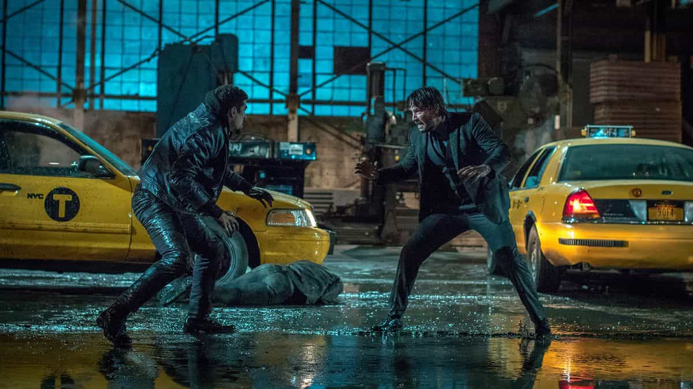
The nature of men is violent. Morality is indifferent towards the existence of violence, and moral questions revolve around the correct or incorrect usage of violence, not the existence of violence itself. This point smacks directly in the faces of beta pacifists that derived their morality from quinoa.
Walk, talk, and DRESS like a man
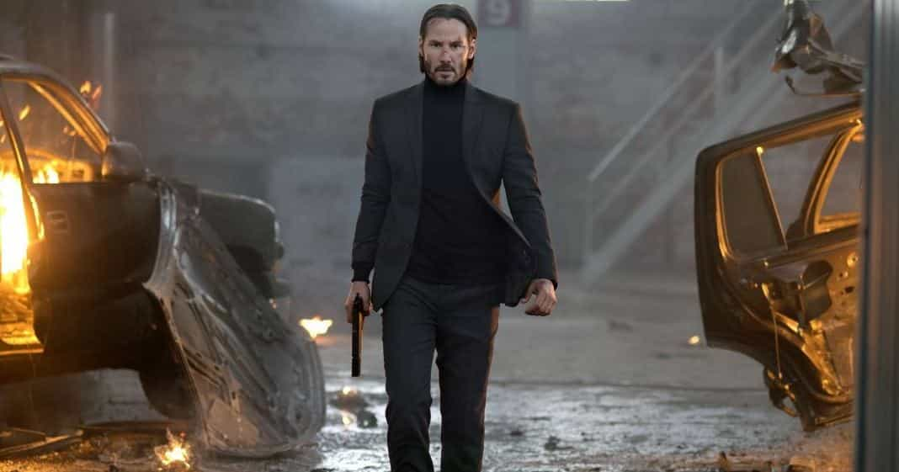
Try to find a meaningful character in the film series that is not dressed impeccably – be it casual or formal – and I’ll take my hat off to you. The world of Wick is not subject to the same degeneracy in the realms of fashion and art as is our world. As a result, the presentation of a man organically becomes masculine.
From Wick himself to the various antagonists, a suit jacket and tapered pants are the bare minimum of what is expected. Heck, even the scores of henchmen Wick dispatches are seen wearing full suits with balaclavas. The message is clear: kill in style, and die in style.
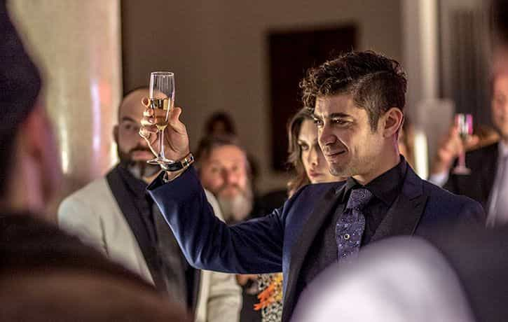
Additionally, the film series does not appeal to the egotistical whims of juvenile boys in hoodies that brag about how much they “day game”; it appeals to our deep and often times suppressed feeling of respect and awe towards men that show exemplary qualities, civility, and material success. There is a right and wrong in beauty, and John Wick’s opinion will not be swayed no matter how autistically the fashion community screeches.
Women are inferior to men
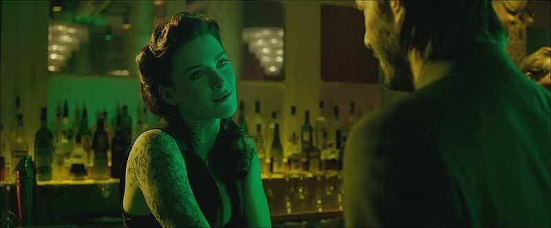
One of the most notable features of the film series is the position of women in the hierarchy of both power and competence. Yes, there are female assassins, but this is merely a tasteful nod to the notion of equal opportunity, not equal outcome.
In the first film, the assassin Perkins makes a failed attempt to kill John even with the unfair advantage of breeching the rules of The Continental. Not only is she allowed to seem blatantly incompetent as an assassin, but also the almighty pussy pass does not water down the consequence of her transgression as it would in the real world. The satisfying scene of Winston revoking her membership by literally gunning her to death should send shivers down the spines of all mangina judges in the legal system that too often sympathize with women.
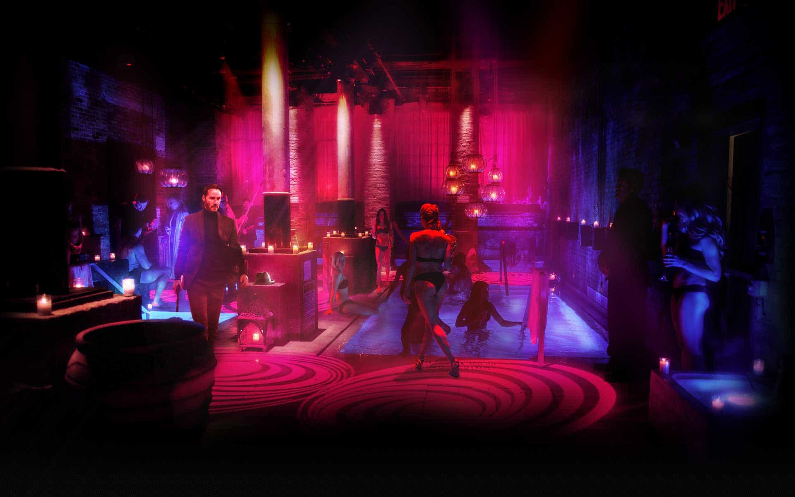
In the second film, Ruby Rose’s character Ares is presented to us as a formidable foe that commands the entirety of D’Antonio’s small army. However, far from a Wonder Woman feminist wet dream, Ares is portrayed as an incomplete woman as she is mute and somewhat androgynous.
She painstakingly makes up for her lack of feminine sexual market value by overcompensating with superb combat skills and undying loyalty towards her superior, Santino D’Antonio. In the knife fight with John, she puts up a very short and fruitless contest, and is quickly killed by the protagonist.
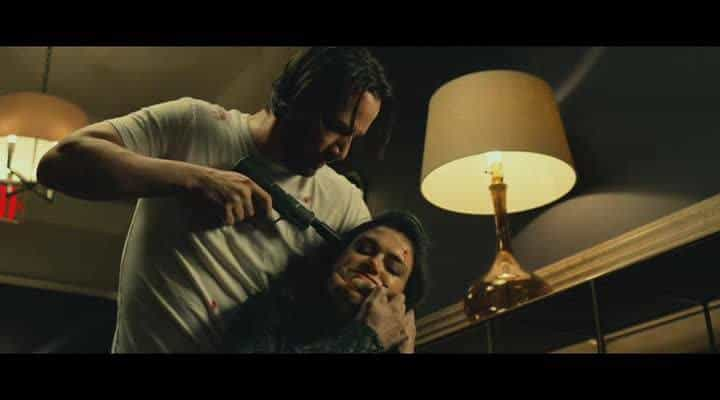
I cannot help but feel that this scene was produced as a direct contrast to the lengthy and difficult fight John experienced with the male assassin Cassian. Aside from the female assassins, all other female roles are relegated to clerical (accounts payable) or sexual entertainment (Circle Nightclub), signifying their insignificance in the affairs of men.
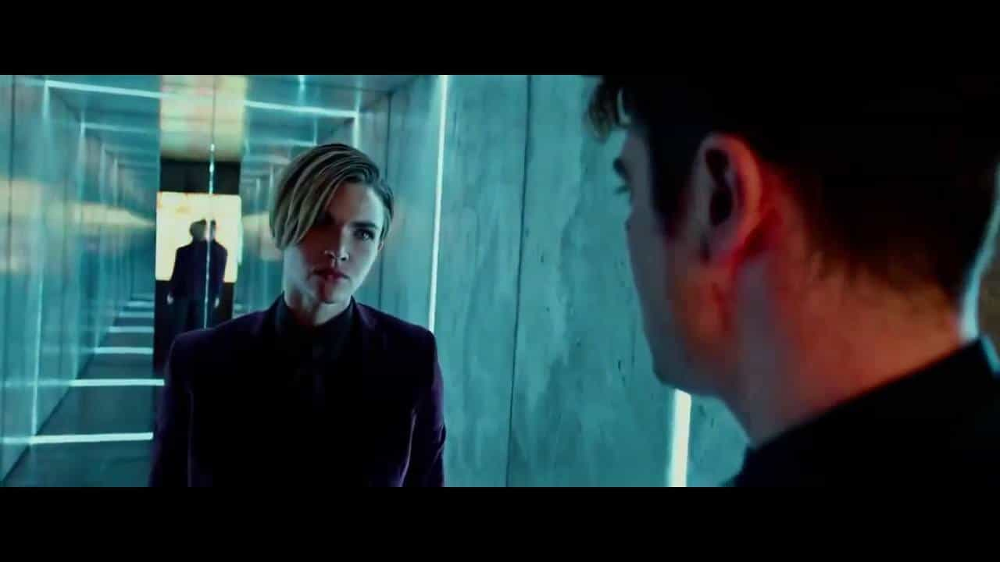
K-Selective music themes
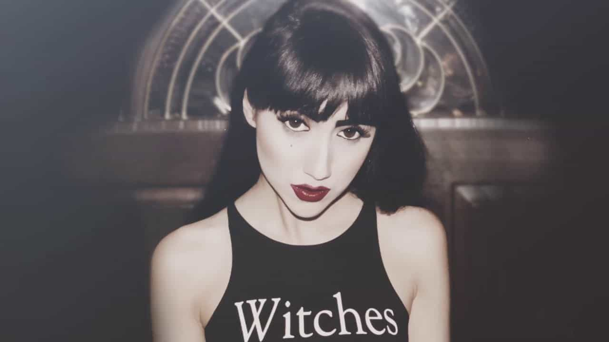
Without embarking on a critical analysis of the musical content of this film series by getting unnecessarily technical with things like the pan-diatonic elements of the general melody, or how such and such crescendo underscores such and such themes, let us quickly explore its two most notable lyrical pieces, namely “Killing Strangers” by Marilyn Manson and “Plastic Heart” by Ciscandra Nostalghia.
Aside from being great songs to play at a medium-loud volume while your driving your S550 Mustang GT, these songs hold some pretty subversive K-selective messages.
Killing Strangers:
This world doesn’t need no opera, we need it for the operation
We don’t need a bigga knife (a bigga knife)
‘Cause we got guns, we got guns, we got guns (we got guns)
We got guns, you betta run (ya betta run, ya betta run, ya betta run)
We’re killin’ strangers, we’re killin’ strangers
We’re killin’ strangers, so we don’t kill the ones that we love…
The notable theme here is the glorification of guns. But a deeper meaning that betrays the heavily K-selective theme of this song is found in the lyrics “we’re killing strangers… so we don’t kill the ones that we love”. Take it how you may, but I see reference to in group preference and the protecting of those around you, even at the cost of eliminating some strangers.
Plastic Heart:
You are the shark
You hunt me like
Your last goodbye
Oh fallen angel
Of the night
Just take my heart
Just rip it out
This holy skin
It’s falling out
I lay my body
On the bed
One day, someday
You know I will see you again”
I put my hand against your plastic heart
No, suicide is not the plan, stand up
Even the stars are trapped inside, oh my
There’s nothing left to hide
There’s nothing left to die
There’s nothing left to die…
Now while I may not be a literature major from the University of Oxford, it doesn’t take much literary sensitivity to see that the feminine voice of the song unashamedly submits to the abstract male presence she sings about.
Lines such as “just take my heart, just rip it out” cannot be mistaken for anything other than total submission to a stronger and, dare I say, somewhat mysterious and damaged male persona. This is the ultimate siren call to the alpha male by the music id of the female as she simultaneously exults her loyalty and feminine support in “One day, someday, you know I will see you again”.
Why you should watch John Wick movies
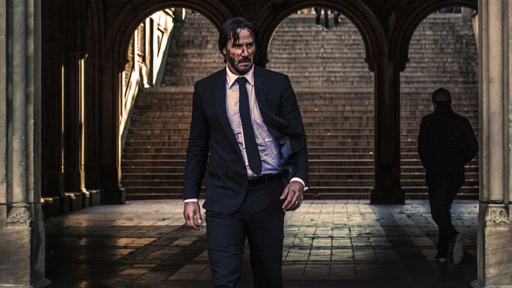
A culture is defined not only by its customs and laws, but also by its art and how its art appeals to its people. Civilization was never defined by an Orwellian, legalistic society, but rather the general zeitgeist of its people when it comes to the abstract appreciation of the world.
The John Wick film series is a powerful piece of art in the cultural war. It exists among notable beacons of true artistic excellence in a society where vomit on a canvas is considered high painting, and 90lb women beating up Russian wrestlers is considered empowering. Everyone who has swallowed the red pill should watch the two movies.
Read Next: Carnival Of Gangs Is An Unapologetically Masculine Multimedia Series